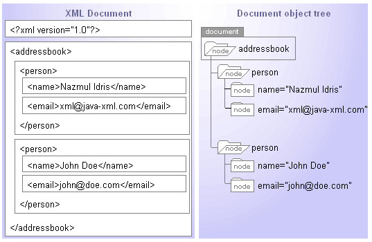
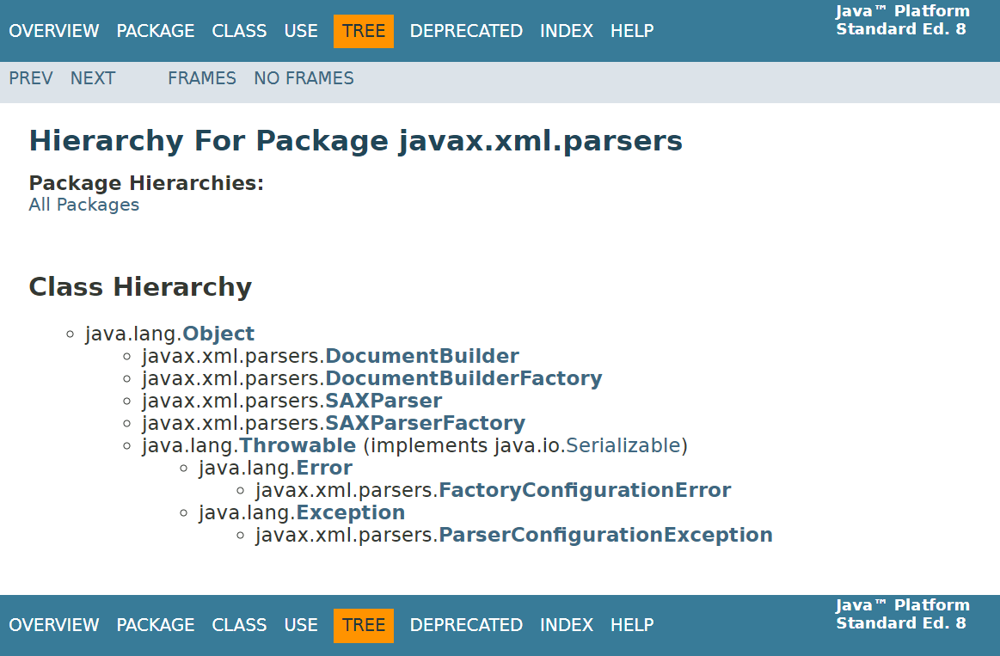
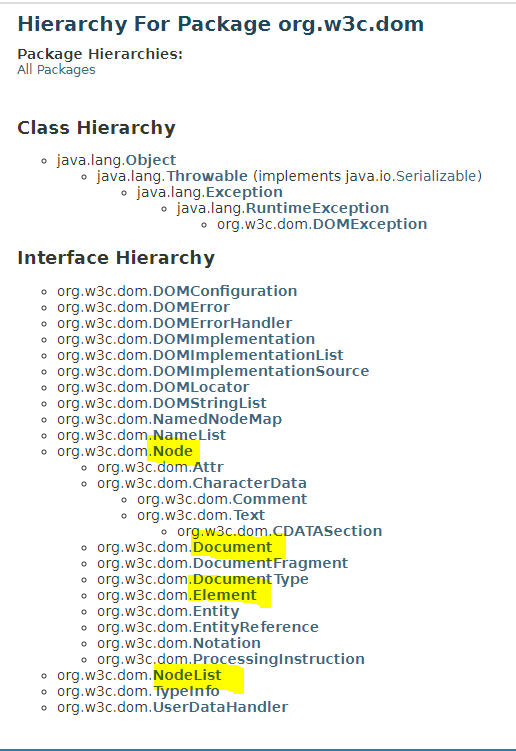
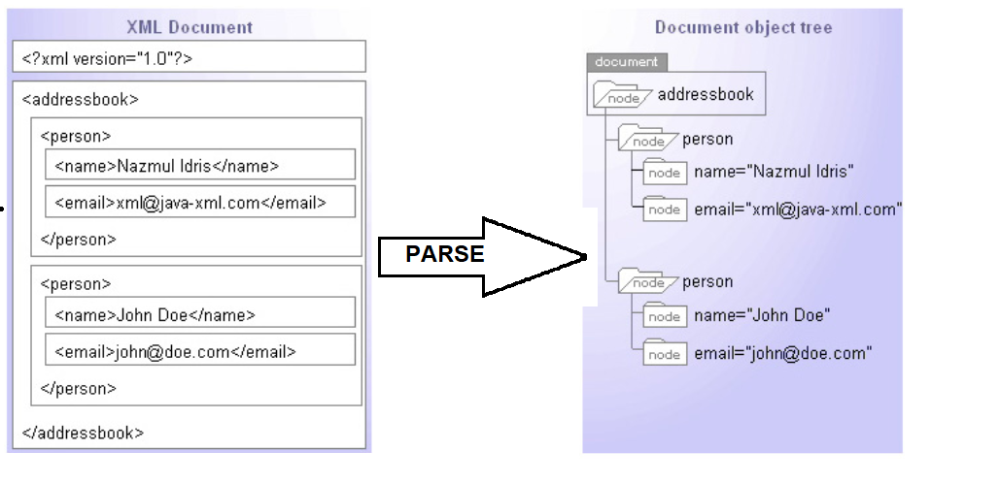
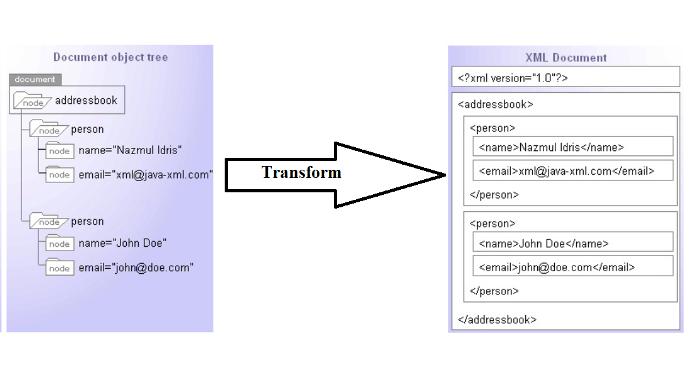
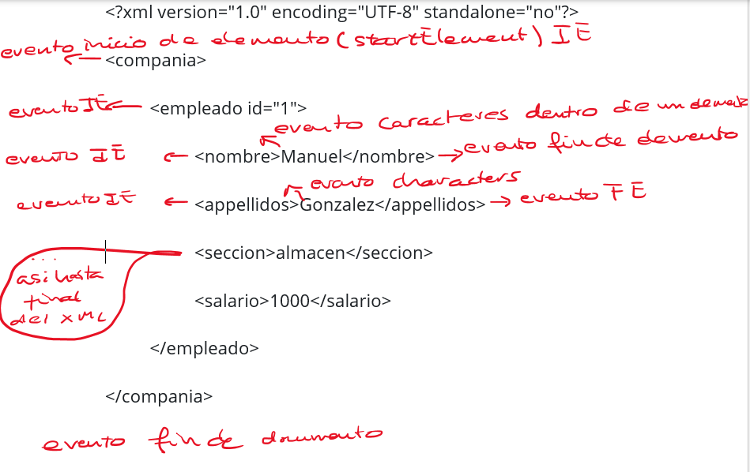
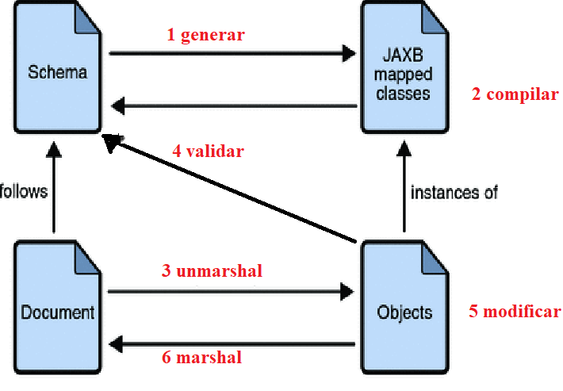
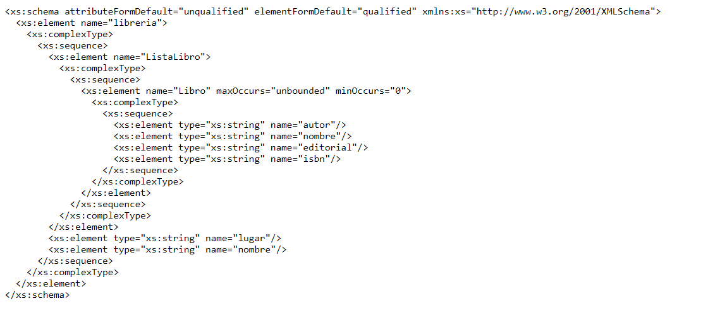
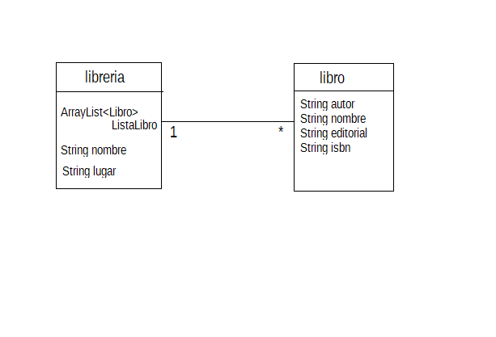
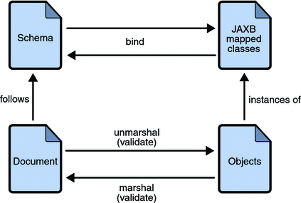

2B. Librerías de tratamiento de XML en Java
| Sitio: | ALONSO DE AVELLANEDA |
| Curso: | Acceso a Datos Vespertino |
| Libro: | 2B. Librerías de tratamiento de XML en Java |
| Imprimido por: | Oliver Bitica |
| Día: | lunes, 21 de septiembre de 2026, 20:27 |
Descripción
Aprenderás a manejar API que interpretan o crean ficheros XML:
- DOM
- SAX
- StAX: API de cursor y API de iterador
- XML Binding: JAXB
1. Introducción
Cuando se quieren almacenar datos que deban ser leídos por aplicaciones ejecutadas en múltiples plataformas será necesario recurrir a formatos más estandarizados, como los lenguajes de marcas.
Los documentos XML consiguen estructurar la información intercalando una serie de marcas denominadas etiquetas. En XML, las marcas o etiquetas tienen cierta similitud con un contenedor de información. Así, una etiqueta puede contener otras etiquetas o información textual. De este modo, conseguiremos subdividir la información estructurándola de forma que pueda ser fácilmente interpretada.
XML es un formato de almacenamiento e intercambio de datos basado en texto estructurado mediante etiquetas. Los usos de XML son múltiples:
- Almacenamiento de datos en un formato portátil entre plataformas y sistemas, lo que hace posible la exportación/importación de bases de datos o su procesamiento desde cualquier lenguaje.
- Formato "neutro" e independiente del formato final. Un documento XML se puede transformar al formato deseado por el cliente que va a visualizarlo: HTML, XHTML, WML, PDF, etc.
- Ficheros de configuración legibles por el usuario y modificables también de manera automática.
Gran parte de la potencia de XML radica en el equilibrio entre ser un formato sencillo de texto, portable a cualquier plataforma pero con la suficiente flexibilidad para representar información estructurada. Esto nos permitirá utilizar XML para compartir información entre diferentes aplicaciones. Podremos acceder a información producida por una aplicación ajena e integrarla en nuestra propia aplicación de forma débilmente acoplada. De esta forma, estaremos utilizando dentro de nuestra aplicación un servicio que nos proporciona otra aplicación que puede estar ubicada en cualquier lugar de Internet.
Además, no solo nos servirá para integrar aplicaciones ubicadas en distintos lugares de la red, sino que también nos permitirá comunicar aplicaciones implementadas en diferentes lenguajes y plataformas. Por ejemplo, podremos intercambiar datos
Como toda la información es textual, no existe el problema de representar los datos de diferente manera. Cualquier dato, ya sea numérico o booleano, habrá que transcribirlo en modo texto, de modo que cualquiera que sea el sistema de representación de datos será posible leer e interpretar correctamente la información contenida en un archivo XML.
Es cierto que los caracteres se pueden escribir usando también diferentes sistemas de codificación, pero XML ofrece diversas técnicas para evitar que esto sea un problema. Por ejemplo, es posible incluir en la cabecera del archivo qué codificación se ha utilizado durante el almacenamiento, o también se pueden escribir los caracteres de código ASCII superior a 127, utilizando entidades de carácter , una forma universal de codificar cualquier símbolo.
XML permite organizar cualquier tipo de información de forma jerárquica. Es similar a cómo la información se guarda en los objetos de una aplicación y cómo se guardaría en un documento XML. La información, en las aplicaciones orientadas a objetos, se estructura, agrupa y jerarquiza en clases, y en los documentos XML se estructura, organiza y jerarquiza en etiquetas contenidas unas dentro de otras y atributos de las etiquetas
Consulta aquí librerías que permiten trabajar con XML desde Java
1.1. Parser o analizador XML
Dado que XML es un lenguaje utilizado ampliamente en el desarrollo de la World Wide Web, existen ya herramientas y estándares de programación para leer documentos XML.
Un analizador XML es un módulo, biblioteca o programa que se ocupa de analizar, clasificar y transformar un archivo de XML en una representación interna, extrayendo la información contenida en cada una de las etiquetas y relacionándola de acuerdo con su posición en la jerarquía.
En el caso de XML, como el formato siempre es el mismo, no necesitamos crear un analizador cada vez que hacemos un programa, sino que existen un gran número de parsers o analizadores sintácticos disponibles que pueden averiguar si un documento XML cumple con una determinada gramática. Estos analizadores o parsers pueden ser secuenciales como SAX o StAX o jerárquicos como DOM.
Analizadores secuenciales
Los analizadores secuenciales permiten extraer el contenido del XML a medida que encuentran las etiquetas de apertura y cierre. Esto significa que van leyendo el archivo línea por línea y procesan los datos de forma inmediata, sin tener que cargar todo el archivo en memoria. Este enfoque es eficiente para manejar grandes volúmenes de datos, ya que no requiere almacenar todo el documento, solo procesarlo a medida que lo lee. Son analizadores muy rápidos, pero presentan el problema de que cada vez que se necesita acceder a una parte del contenido es necesario releer todo el documento de arriba a abajo.
En Java hay dos analizadores secuenciales: SAX, que es el acrónimo de Simple API for XML. Es un analizador muy usado en varias bibliotecas de tratamiento de datos XML, pero no suele usarse en aplicaciones finales y StAX, Streaming API for XML, posterior a SAX y que lo ha superado.
Analizadores jerárquicos
Generalmente, las aplicaciones finales que necesitan trabajar con datos XML suelen usar analizadores jerárquicos, porque además de realizar un análisis secuencial que les permite clasificar el contenido, los datos contenidos se almacenan en la memoria RAM siguiendo la estructura jerárquica detectada en el documento. Esto facilita mucho las consultas que haya que repetir varias veces, dado que las estructuras jerárquicas de la memoria RAM tienen un rendimiento de acceso a los datos muy eficiente.
Los analizadores jerárquicos guardan todos los datos del XML en memoria dentro de una estructura jerárquica. Son ideales para aplicaciones que requieran una consulta continua de los datos.
El formato de la estructura donde se almacena la información en la memoria RAM ha sido especificado por el organismo internacional W3C (World Wide Web Consortium) y se suele conocer como DOM (Document Object Model, modelo de objetos del documento).
HTML y JavaScript han popularizado mucho el estándar DOM. Se trata de una especificación que Java materializa en forma de interfaces. La principal se denomina Document y representa todo un documento XML. Al tratarse de una interfaz, puede ser implementada por varias clases.
Comparativa analizadores
| CARACTERÍSTICA | StAX | SAX | DOM | TRAX |
|---|---|---|---|---|
| Tipo de API | Pull, streaming | Push, streaming | En memoria | Regla XSLT |
| Facilidad de uso | Alta | Media | Alta | Media |
| Capacidad XPath | No | No | Si | Si |
| Eficiencia de CPU y memoria | Buena | Buena | Varia | Varia |
| Solo hacia adelante | Si | Si | No | No |
| Lee XML | Si | Si | Si | Si |
| Escribe XML | Si | No | Si | Si |
| Crear, Leer, Modificar, Borrar | No | No | Si | No |
1.2. DOM frente a SAX
El analizador DOM es una API basada en que la información puede representarse de forma jerárquica de árbol. Proporciona interfaces para trabajar con el árbol completo (documento) o parte del mismo.
Un analizador DOM crea una estructura de árbol en memoria del documento XML de entrada y luego espera las solicitudes del cliente. Un analizador DOM carga en memoria todo el documento XML, independientemente de si el cliente necesita parte o el documento entero. Con el analizador DOM, las llamadas a métodos en la aplicación cliente deben ser explícitas y formar una especie de llamadas a métodos encadenados.
El analizador SAX es una API basada en eventos. Por lo general, una API basada en eventos proporciona interfaces. Son necesarias clases que implementan las interfaces definidas por la API para manejar los eventos que se generan durante el proceso de análisis de un documento XML, estos son los controladores. Los controladores son responsables de definir qué acciones deben llevarse a cabo cuando el analizador SAX encuentra diferentes partes del XML, como etiquetas, texto o comentarios.
El analizador SAX no crea ninguna estructura interna. En cambio, toma las ocurrencias de los componentes de un documento de entrada como eventos y le dice al cliente lo que lee, mientras lee el documento de entrada. El analizador SAX sirve a la aplicación cliente solo con partes del documento en un momento dado.
Resumiendo, las diferencias entre las API DOM y SAX:
- DOM analiza documentos enteros
- Representa el resultado como un árbol
- permite búsquedas en el árbol
- permite la modificación del árbol
- Es adecuado para leer ficheros de datos/configuración.
- SAX analiza secuencialmente y de principio a fin el documento XML, hasta que se le diga que pare.
- Dispara eventos por cada
- inicio de etiqueta
- contenido de etiqueta
- fin de etiqueta
1.3. Serialización del XML
La serialización es un mecanismo ampliamente usado para transportar objetos a través de una red, para hacer persistente un objeto en un archivo o base de datos, o para distribuir objetos idénticos a varias aplicaciones o localizaciones.
El XML es un formato estándar de documentos basados en texto para almacenar datos legibles por aplicaciones que proporciona un fácil procesamiento. Para llevar a cabo este proceso se han de definir mediante reglas tanto el proceso de transformación de objetos Java a XML como el proceso de transformación inversa.
Las librerías JAXB (Java Architecture XML Binding) y XStream permiten serializar objetos Java en un medio de almacenamiento, como puede ser un archivo o un búfer de memoria, con el fin de transmitirlo a través de una conexión en red, ya sea como una serie de bytes o usando un formato humanamente más legible, como XML o JSON, entre otros. La serie de bytes o el formato empleado para la transmisión pueden ser usados para crear un nuevo objeto que es idéntico en todo al original, incluido su estado interno. Por tanto, el nuevo objeto es un clon del original.
2. DOM

María Jesús Lamarca Lapuente. Hipertexto: El nuevo concepto de documento en la cultura de la imagen.
DOM (Document Object Model) es una recomendación oficial del World Wide Web Consortium (W3C). Define una interfaz que permite a los programas acceder y actualizar el estilo, la estructura y el contenido de los documentos XML. Los analizadores XML compatibles con DOM implementan esta interfaz.
El módulo java.xml incluye las API necesarias para procesar y manipular documentos XML en Java. Esto incluye el soporte para el DOM (Document Object Model), SAX (Simple API for XML) y XSLT (Extensible Stylesheet Language Transformations).
Incluye la clase abstracta DocumentBuilder con el propósito de poder instanciar estructuras DOM a partir de un XML, puede necesitar fuentes de datos o requerimientos diversos. Recuerda que las clases abstractas no se pueden instanciar de forma directa. Por este motivo, el consorcio W3 especifica también la clase DocumentBuilderFactory:
DocumentBuilderFactory dbf = DocumentBuilderFactory.newInstance();
DocumentBuilder ndb =dbf. newDocumentBuilder ( );
A partir de aquí podemos leer el fichero XML y tener un documento (DOM) que representa en memoria la información contenida en el XML (parseo). O podremos añadir nodos en este y después escribirlo en un fichero XML (transformación).
OPERACIÓN DE PARSEO:
XML ---> DOCUMENT

Document doc = dBuilder. parse ( new File ( "fitxer.xml" ) );
El método parse() lee el fichero XML y lo convierte en un documento (de la clase org.w3c.dom.Document) en memoria RAM.
Para poder utilizar la información contenida en el árbol utilizaremos las interfaces de DOM: Node, NodeList, Element, etc. Lo veremos más adelante.
OPERACIÓN DE TRANSFORMACIÓN:
DOCUMENT ---> XML

Se crea un documento (árbol DOM) vacío con el método de la clase DocumentBuilder: newDocument():
Document doc = ndb. newDocument ( );
Para poder añadir nodos y subnodos con la información que queramos guardar en el fichero XML utilizaremos las interfaces de DOM: Node, NodeList, Element, etc. Lo veremos más adelante.
La escritura de la información contenida en un documento (DOM) se puede secuenciar en forma de texto utilizando otra utilidad de Java llamada Transformer . Se trata de una utilidad que permite realizar fácilmente conversiones entre diferentes representaciones de información jerárquica. Es capaz, por ejemplo, de pasar la información contenida en un objeto Document a un archivo de texto en formato XML.
Transformer es también una clase abstracta y requiere de una fábrica para poder ser instanciada.
La clase Transformer puede trabajar con multitud de contenedores de información porque en realidad trabaja con un par de tipos adaptadores (clases que hacen compatibles jerarquías diferentes) que se llaman Source y Result.
Las clases que implementen estas interfaces se encargarán de hacer compatible un tipo de contenedor específico al requerimiento de la clase Transformer . Así, disponemos de las clases DOMSource, SAXSource o StreamSource como adaptadores del contenedor de la fuente de información ( DOM, SAX o Stream, respectivamente). DOMResult, SAXResult o StreamResult son los adaptadores equivalentes del contenedor destino.
El código básico para realizar una transformación de DOM a un archivo de texto XML sería el siguiente:
// Creación de una instancia Transformer
Transformer trans = TransformerFactory. newInstance ( ). newTransformer ( );
// Creación de los adaptadores Source y Result a partir de un Documento
// y un File.
StreamResult result = new StreamResult ( file );
DOMSource source = new DOMSource ( doc );
trans. transform ( source, result );
2.1. Ejemplo de DOM
El siguiente ejemplo analiza un archivo XML y lo transforma, para mostrarlo por pantalla o para construir otro fichero (no XML).
package ejemplo1;
import org.w3c.dom.Document;
import java.io.File;
import java.io.IOException;
import javax.xml.parsers.DocumentBuilderFactory;
import javax.xml.parsers.ParserConfigurationException;
import javax.xml.transform.OutputKeys;
import javax.xml.transform.Transformer;
import javax.xml.transform.TransformerException;
import javax.xml.transform.TransformerFactory;
import javax.xml.transform.dom.DOMSource;
import javax.xml.transform.stream.StreamResult;
import org.xml.sax.SAXException;
public class XmlCtrlDOM {
final static File ficheroIN = new File("cd_catalog.xml");
final static File ficheroOUT = new File("catalogo.txt");
public static void main(String args[])
throws SAXException, IOException, ParserConfigurationException, TransformerException {
Document documento = null;
documento = instanciarDocument(ficheroIN);// documento tiene una representación de ficheroIN
escribeDocumentATextXml(documento, ficheroOUT);//documento lo transformamos en ficheroOUT
}
// crea un documento DOM vacío
public static Document instanciarDocument() throws ParserConfigurationException {
Document doc = null;
doc = DocumentBuilderFactory.newInstance().newDocumentBuilder().newDocument();
return doc;
}
public static Document instanciarDocument(File fXmlFile)
throws SAXException, IOException, ParserConfigurationException {
// lee un fichero XML y crea un documento (DOM, un árbol) en memoria)
Document doc = null;
doc = DocumentBuilderFactory.newInstance().newDocumentBuilder().parse(fXmlFile);
return doc;
}
// DOM --->xml
// Transforma un documento DOM en un fichero XML o lo pasa a otra salida distinta.
public static void escribeDocumentATextXml(Document doc, File file) throws TransformerException {
Transformer trans = TransformerFactory.newInstance().newTransformer();
trans.setOutputProperty(OutputKeys.INDENT, "yes");
// StreamResult puede tener distintas salidas: por pantalla, a un fichero
StreamResult result = new StreamResult(file);
// StreamResult result = new StreamResult(System.out);
DOMSource source = new DOMSource(doc);
trans.transform(source, result);
}
}2.2. Jerarquía de clases del paquete javax.xml.parsers

jerarquía de clases e interfaces (Java SE 11)

jerarquía de clases e interfaces del paquete org.w3c.dom (Java SE 11)
2.3. La estructura DOM
La estructura DOM toma la forma de un árbol, donde cada parte del XML se encontrará representada en forma de nodo.
En función de la posición en el documento XML, hablaremos de diferentes tipos de nodos. El nodo principal que representa todo el XML entero se denomina documento, y las diversas etiquetas, incluida la etiqueta raíz, se conocen como nodos de tipo Element. El contenido textual de una etiqueta se instancia como nodo de tipo Text y los atributos como nodos de tipo Attr. Cada nodo específico dispone de métodos para acceder a sus datos concretos (nombre, valor, nodos hijos, nodo padre, etc.).
El DOM resultante conserva la estructura y el contenido del XML. La información no visible, como los espacios y saltos de línea entre etiquetas, también se representa mediante nodos de texto y debe tenerse en cuenta al procesar el contenido.
Al mapear XML, los espacios y saltos de línea que aparecen entre etiquetas se representan en DOM como nodos Text hijos. El contenido textual de una etiqueta también se representa mediante nodos Text; para obtenerlo puede utilizarse getTextContent().
La interfaz Document contempla un conjunto de métodos para seleccionar diferentes partes del árbol a partir del nombre de la etiqueta o de un atributo identificador. Las partes del árbol se devuelven como objetos Element, los cuales representan un nodo y todos sus hijos. De este modo, podremos ir explorando partes del árbol sin necesidad de tener que pasar por todos los nodos.
Interfaces DOM
DOM define varias interfaces, las más comunes son las siguientes
- Node − Representa a cualquier nodo del documento. Es el tipo primario del que, por herencia, tenemos el resto de las interfaces.
- Element − Es un tipo de nodo específico asociado a una etiqueta.
- Attr − Representa un atributo de un elemento.
- Text − Contenido de un elemento o atributo.
- Document − Representa al documento XML completo. Generalmente nos referiremos a él como árbol DOM. Permite crear nuevos nodos en el documento.
- NodeList. Colección ordenada de nodos a los que se puede acceder por medio de un índice.
métodos DOM mas usuales
- Element Document.getDocumentElement() − Retorna el elemento raíz del documento.
- Node Node.getFirstChild() − Retorna el primer nodo hijo del nodo.
- Node Node.getLastChild() − Retorna el ultimo nodo hijo del nodo.
- Node Node.getNextSibling() − Retorna el siguiente hermano de un nodo.
- Node Node.getPreviousSibling() − Retorna el hermano anterior de un nodo.
- String Element.getAttribute(attrName) − Retorna el valor del atributo del nodo cuyo nombre que se pasa como argumento.
- String Node.getNodeValue − Retorna el valor del nodo, no el contenido textual. Esta depende del tipo de nodo:
ELEMENT_NODE el nodo es un Element
DOCUMENT_NODE
ATTRIBUTE_NODE
- NodeList Element.getElementsByTagName(String name) Devuelve un NodeList (lista de nodos) de todos los nodos de tipo Element con el nombre que se pasa como argumento, en el orden que aparece en el documento.
- NodeList Document.getElementsByTagName(String name) Devuelve un NodeList (lista de nodos) de todos los nodos de tipo Element con el nombre que se pasa como argumento, en el orden que aparece en el documento.
- Node NodeList.item(i) Recupera un nodo en la posición i del NodeList.
Más información sobre los métodos necesarios para trabajar con nodos
Para facilitar la obtención del contenido de un Element ampliaremos las utilidades de la clase XmlCtrlDOM añadiendo dos métodos más.
public static String getValorEtiqueta ( String etiqueta, Element elemento ) {
Node nValue = elemento. getElementsByTagName ( etiqueta ). item ( 0 );
return nValue. getChildNodes ( ). item ( 0 ).getTextContent();
//también se puede recuperar con getNodeValue()
}
public static Element getElementEtiqueta ( String etiqueta, Element elemento ) {
return ( Element ) elemento. getElementsByTagName ( etiqueta ).item ( 0 );
}
El primero recibe el nombre de la etiqueta y el elemento (o nodo parcial del árbol) a partir del cual se desea realizar la búsqueda. Devuelve el contenido textual del nodo.
Utilizando el método getElementsByTagName, conseguiremos todos los nodos que tengan por nombre el valor del parámetro etiqueta. Es decir, nos devolverá una colección de nodos. Por ello accedemos con el método item, indicando que nos interesa el primer elemento (posición cero).
El método getNodeValue ( ) devuelve el contenido textual del nodo cuando se trata de nodos de tipo texto.
El segundo método es muy similar al primero, pero en vez de recuperar el texto, obtendremos el nodo con todos los hijos que tenga. Es útil para aplicar a nodos intermedios (no textuales).
Los objetos Element disponen de métodos para añadir nuevos hijos ( appendChild) o asignar el valor a un atributo ( setAttribute).
La creación de nuevos elementos (etiquetas), se hace a partir del objeto de tipo Document, utilizando el método, createElement. Crea un elemento vinculado al documento.
Si queremos crear Un nodo de tipo texto (contenido textual )habrá que llamar al método createTextNode, y si lo que queremos son comentarios llamaremos createComment.
La creación de nodos no implica la ubicación de este dentro del árbol. Es decir, además de crearlos habrá que asignarlos a un padre usando appendChild.
2.4. Ejemplo completo
fichero.xml --------> DOM
El ejemplo siguiente muestra cómo utilizar DOM para analizar y extraer información de un fichero XML.
Listamos la información contenida en el documento clase.xml, sin etiquetas.
clase.xml
<?xml version="1.0"?>
<clase>
<alumno numero="393">
<nombre>Luis</nombre>
<apellido>Luna</apellido>
<apodo>Na</apodo>
<marcas>85</marcas>
</alumno>
<alumno numero="493">
<nombre>Antonio</nombre>
<apellido>Álvarez</apellido>
<apodo>Avez</apodo>
<marcas>95</marcas>
</alumno>
<alumno numero="593">
<nombre>Juan</nombre>
<apellido>Juz</apellido>
<apodo>jazz</apodo>
<marcas>90</marcas>
</alumno>
</clase>Los pasos a seguir son los siguientes:
- Importar paquetes necesarios: org.w3c.dom y javax.xml.parsers
import org.w3c.dom.*; import javax.xml.parsers.*; import java.io.*; - Construir un documento DOM en memoria a partir de un fichero XML
DocumentBuilderFactory factory = DocumentBuilderFactory.newInstance(); DocumentBuilder builder = factory.newDocumentBuilder(); Document document=builder.parse(new File(" nombre_fichero" ));// El método parse construye en memoria el documento completo - Extraer el elemento raíz
Element root = document.getDocumentElement(); - Examinar atributos
//returns specific attribute getAttribute("attributeName"); //returns a Map (table) of names/values getAttributes(); - Examinar subelementos
//returns a list of subelements of specified name getElementsByTagName("subelementName"); //returns a list of all child nodes getChildNodes();
El programa completo:
import java.io.File;
import javax.xml.parsers.DocumentBuilderFactory;
import javax.xml.parsers.DocumentBuilder;
import org.w3c.dom.Document;
import org.w3c.dom.NodeList;
import org.w3c.dom.Node;
import org.w3c.dom.Element;
public class Ejemplo2 {
public static void main(String[] args) {
try {
File inputFile = new File("clase.xml");
DocumentBuilderFactory dbFactory = DocumentBuilderFactory.newInstance();
DocumentBuilder dBuilder = dbFactory.newDocumentBuilder();
Document doc = dBuilder.parse(inputFile);
doc.getDocumentElement().normalize(); //**
System.out.println("Root element:" + doc.getDocumentElement().getNodeName());
NodeList nList = doc.getElementsByTagName("alumno");
Node nNode=null;
Element eElement=null;
System.out.println("----------------------------");
for (int temp = 0; temp < nList.getLength(); temp++) {
nNode = nList.item(temp);
System.out.println("\nCurrent Element:" + nNode.getNodeName());
if (nNode.getNodeType() == Node.ELEMENT_NODE) {//comprueba si el nodo recuperado es del tipo nodo
eElement = (Element) nNode;
System.out.println("numero de alumno: "
+ eElement.getAttribute("numero"));
System.out.println("nombre: "
+ eElement.getElementsByTagName("nombre").item(0).getTextContent());
System.out.println("apellido: "
+ eElement.getElementsByTagName("apellido").item(0).getTextContent());
System.out.println("apodo: "
+ eElement.getElementsByTagName("apodo").item(0).getTextContent());
System.out.println("marcas: "
+ eElement.getElementsByTagName("marcas").item(0).getTextContent());
}
}
} catch (Exception e) {
e.printStackTrace();
}
}
}** el método normalize(),
La normalización implica:
- Unificación de nodos de texto: Si hay nodos de texto adyacentes (es decir, texto que aparece en el documento XML sin etiquetas que los separen), normalize() los combinará en un único nodo de texto. Esto es útil porque puede haber espacios en blanco o saltos de línea innecesarios en el XML que se deben manejar.
- Los nodos de texto vacíos se eliminan. Los nodos que solo contienen espacios en blanco no se eliminan automáticamente.
Tienes más ejemplos en
https://ioc.xtec.cat/materials/FP/Materials/2252_DAM/DAM_2252_M06/web/html/WebContent/u1/a3/continguts.html
2.5. Creación de un fichero XML a partir de un documento
Transformer transformer = tFactory.newTransformer();
La escritura de la información contenida en el DOM se puede secuenciar en forma de texto utilizando otra utilidad de Java llamada Transformer. Se trata de una utilidad que permite realizar fácilmente conversiones entre diferentes representaciones de información jerárquica. Es capaz, por ejemplo, de pasar la información contenida en un objeto Document a un archivo de texto en formato XML.
Transformer es también una clase abstracta y requiere de una fábrica para poder ser instanciada. La clase Transformer puede trabajar con varios contenedores de información porque en realidad trabaja con un par de tipos adaptadores (clases que hacen compatibles jerarquías diferentes) que se llaman Source y Result. Las clases que implementen estas interfaces se encargarán de hacer compatible un tipo de contenedor específico al requerimiento de la clase Transformer. Así, disponemos de las clases DOMSource, SAXSource o StreamSource como adaptadores del contenedor de la fuente de información ( DOM, SAX o Stream, respectivamente). DOMResult, SAXResult o StreamResult son los adaptadores equivalentes del contenedor destino.
El código básico para realizar una transformación de un DOM a un archivo de texto XML sería el siguiente:
Document doc = docBuilder.newDocument();
TransformerFactory tFactory=TransformerFactory. newInstance ( );
Transformer transformer = tFactory.newTransformer(); //crea un objeto Transformer, necesario para a partir del árbol DOM crear el fichero XML correspondiente
new StreamResult ( File fichero )
new DOMSource ( Document documento ) //o utilizar un árbol dom que hayamos creado
Transformer. transform (DOMSource origen, StreamResult resultado)
3. SAX
SAX es un estándar de parseo de XML. El estándar SAX ("Simple API for XML") procesa el documento, o información en XML, de una manera muy diferente a DOM. SAX procesa la información por eventos.
A diferencia de DOM, que genera un árbol jerárquico en memoria, SAX procesa la información en XML conforme esta sea presentada (evento por evento), manipulando cada elemento en un determinado tiempo, sin incurrir en uso excesivo de memoria.
SAX es un analizador ("analizador") ideal para manipular archivos de gran tamaño, ya que no ocupa espacio al generar un árbol en memoria como es requerido en DOM. Es más rápido y sencillo que utilizar DOM y, por el contrario, realiza una lectura secuencial del documento, por lo que una vez leído no se puede volver atrás, cosa que DOM sí permite.
DOM permite leer (parse) y escribir (transform) en ficheros XML un árbol DOM, mientras que SAX solo se puede utilizar para leer la información del XML.
SAX realiza un análisis secuencial y no hay manera de determinar relaciones padre/hijo: es responsabilidad del programador manejar las jerarquías en el fichero XML
Se recomienda utilizar SAX cuando:
- Queremos parsear el documento XML una sola vez.
- Queremos parsear partes del documento XML (capturamos los eventos importantes).
- No se requiere una modificación estructural.
- Grandes archivos XML.
Características
- Detecta cuándo empieza y termina un elemento o el documento, o un conjunto de caracteres, etc. (genera eventos).
- Gestiona los espacios de nombres.
- Comprueba que el documento está bien formado.
- Las aplicaciones necesitan implementar manejadores de los eventos notificados.
- SAX lee secuencialmente de principio a fin, sin cargar todo el documento en memoria.
El paquete necesario para analizar ficheros XML con SAX es javax.xml.parsers puedes consultarlo en documentación
Las clases que necesitaremos:
SAXParser
SAXParserFactory
Para detectar y trabajar con eventos necesitaremos clases del paquete org.xml.sax puedes consultarlo en documentación
La clase org.xml.sax.helpers.DefaultHandler es el manejador genérico de ficheros XML. Esta clase implementa qué acciones debe realizar el parseador.
Responde a eventos, por lo que se llamará a los métodos especificados cuando suceda algo en concreto. Los métodos principales de esta clase son:
- startDocument: Se invoca cuando se detecta que el documento empieza. Aquí deben indicarse las acciones a realizar al inicio del documento.
- endDocument: Se invoca cuando se detecta que el documento ha acabado. Por lo tanto, aquí deben indicarse las acciones a realizar al finalizar el documento.
- startElement: Se invoca cuando encuentra un nuevo elemento, nodo, etiqueta, etc. Aquí debe indicarse el tratamiento que se deberá realizar sobre cada nuevo elemento, como la recogida de información de sus atributos.
- endElement: Se invoca una vez ha leído el elemento. Aquí se encuentra la información del elemento; su contenido se notifica mediante characters
- characters: Se invoca cuando encuentra texto dentro de etiquetas
3.1. ¿Cómo funciona SAX?
Los analizadores SAX están basados en un modelo de eventos: a medida que el analizador recorre el documento, este informa de la ocurrencia de eventos, tales como el comienzo de un elemento XML o el final del documento, a un objeto manejador de eventos (event handler).
¿Cómo funcionan los manejadores de eventos?
El analizador SAX procesa un documento XML como el siguiente analizándolo secuencialmente. SAX detecta eventos, que no son otra cosa que inicio y fin de etiqueta, inicio y fin del documento XML, contenido textual de un nodo, etc.

El siguiente programa utiliza SAX para analizar un fichero XML y obtener la información contenida en él. En el ejemplo utiliza el manejador por defecto:
Este bloque de código es común a todos los programas que utilicen SAX:
public class Ejemplo1 {
public static void main(String[] args) throws Exception {
SAXParserFactory factory = SAXParserFactory.newInstance();
SAXParser saxParser = factory.newSAXParser();
saxParser.parse(new File("menu.xml"), new DefaultHandler());
}
}1. Se crea el objeto de la clase SAXParser
SAXParserFactory factory = SAXParserFactory.newInstance();
SAXParser saxParser = factory.newSAXParser();
2. A partir del objeto analizador, mandamos que se analice el XML de acuerdo con el manejador que nosotros queramos, en el ejemplo DefaultHandler
Para que nuestro programa, recupere información deberemos crear nuestro propio manejador que debe heredar de DefaultHandler y debe sobrescribir los métodos que necesitemos en función de la lógica del programa
Los métodos asociados a los eventos anteriores
1. startDocument(): Se llama al principio del documento XML.
2. endDocument(): Se llama al final del documento XML.
3. startElement (String uri, String localName, String qName, Attributes atts): se llama al comienzo de un elemento.
4. endElement (String uri, String localName, String qName): se llama al final de un elemento.
5. characters (char[] ch, int start, int length): se llama cuando se encuentran datos de texto entre las etiquetas inicial y final de un elemento.
3.2. Cómo leer un archivo XML con SAX
El proceso de análisis con SAX será el siguiente:
Los objetos SAXParser se construyen a partir de la clase SAXParserFactory. Una vez instanciado el analizador, se efectúa el análisis llamando al método parse:
SAXParserFactory factory = SAXParserFactory.newInstance();
SAXParser saxParser = factory.newSAXParser();
saxParser.parse(inputFile, userhandler);
En el ejemplo usaremos los métodos de devolución de llamada SAX:
- startDocument() y endDocument() - Método llamado al inicio y al final de un documento XML.
- startElement() y endElement() - Método llamado al inicio y al final de un elemento del documento.
- characters() - Método llamado con el contenido de texto entre las etiquetas de inicio y fin de un elemento de documento XML.
y por cada evento el código que corresponde a lo que queremos que haga nuestro programa cuando se produzca ese evento
public void startElement(String uri, String localName, String qName, Attributes attributes)
throws SAXException {....}public void endElement(String uri,
String localName, String qName) throws SAXException {....}public void characters(
char ch[], int start, int length) throws SAXException {....}Veamos un ejemplo completo:
Leeremos el contenido del siguiente documento XML:(input.xml)
<?xml version = "1.0"?>
<class>
<student rollno = "393">
<firstname>dinkar</firstname>
<lastname>kad</lastname>
<nickname>dinkar</nickname>
<marks>85</marks>
</student>
<student rollno = "493">
<firstname>Vaneet</firstname>
<lastname>Gupta</lastname>
<nickname>vinni</nickname>
<marks>95</marks>
</student>
<student rollno = "593">
<firstname>jasvir</firstname>
<lastname>singn</lastname>
<nickname>jazz</nickname>
<marks>90</marks>
</student>
</class>import java.io.File;
import javax.xml.parsers.SAXParser;
import javax.xml.parsers.SAXParserFactory;
import org.xml.sax.Attributes;
import org.xml.sax.SAXException;
import org.xml.sax.helpers.DefaultHandler;
public class SAXParserDemo {
public static void main(String[] args) {
try {
File inputFile = new File("input.xml");
SAXParserFactory factory = SAXParserFactory.newInstance();
SAXParser saxParser = factory.newSAXParser();
UserHandler userhandler = new UserHandler();
saxParser.parse(inputFile, userhandler);
} catch (Exception e) {
e.printStackTrace();
}
}
}
class UserHandler extends DefaultHandler {
boolean bFirstName = false;
boolean bLastName = false;
boolean bNickName = false;
boolean bMarks = false;
@Override
public void startElement(
String uri, String localName, String qName, Attributes attributes)
throws SAXException {
if (qName.equalsIgnoreCase("student")) {
String rollNo = attributes.getValue("rollno");
System.out.println("Roll No: " + rollNo);
} else if (qName.equalsIgnoreCase("firstname")) {
bFirstName = true;
} else if (qName.equalsIgnoreCase("lastname")) {
bLastName = true;
} else if (qName.equalsIgnoreCase("nickname")) {
bNickName = true;
}
else if (qName.equalsIgnoreCase("marks")) {
bMarks = true;
}
}
@Override
public void endElement(String uri,
String localName, String qName) throws SAXException {
if (qName.equalsIgnoreCase("student")) {
System.out.println("End Element:" + qName);
}
}
@Override
public void characters(char ch[], int start, int length) throws SAXException {
if (bFirstName) {
System.out.println("First Name: " + new String(ch, start, length));
bFirstName = false;
} else if (bLastName) {
System.out.println("Last Name: " + new String(ch, start, length));
bLastName = false;
} else if (bNickName) {
System.out.println("Nick Name: " + new String(ch, start, length));
bNickName = false;
} else if (bMarks) {
System.out.println("Marks: " + new String(ch, start, length));
bMarks = false;
}
}
}
Fuente: TutorialsPointRoll No: 393
First Name: dinkar
Last Name: kad
Nick Name: dinkar
Marks: 85
End Element:student
Roll No: 493
First Name: Vaneet
Last Name: Gupta
Nick Name: vinni
Marks: 95
End Element:student
Roll No: 593
First Name: jasvir
Last Name: singn
Nick Name: jazz
Marks: 90
End Element:studentPara analizar un archivo XML con una codificación UTF-8 explícita, se puede crear un InputSource de la siguiente forma:
File file = new File("c:\\file-utf.xml");
InputStream inputStream= new FileInputStream(file);
Reader reader = new InputStreamReader(inputStream,"UTF-8");
InputSource is = new InputSource(reader);
is.setEncoding("UTF-8");
saxParser.parse(is, handler);4. StAX
StAX es una API basada en Java para analizar documentos XML de forma similar a como lo hace el analizador SAX. Pero hay dos diferencias principales entre las dos API:
StAX es una API pull, mientras que SAX es una API push. Significa que en el caso del analizador StAX, una aplicación cliente necesita solicitar al analizador StAX que obtenga información de XML siempre que lo necesite. Pero en el caso del analizador SAX, se requiere una aplicación cliente para obtener información cuando el analizador SAX notifica a la aplicación cliente que la información está disponible.
La API StAX puede leer y escribir documentos XML. Con la API SAX, un archivo XML solo se puede leer.
StAX consta realmente de dos API distintas:
- API de cursor: Representa un cursor con el cual se puede ir hacia adelante en un documento XML desde el principio hasta el final. Este cursor puede apuntar un elemento a la vez y siempre se mueve hacia adelante, nunca hacia atrás.
- API de iterador: Representa un flujo de un documento XML como un conjunto de objetos de eventos discretos. La aplicación saca estos eventos en el mismo orden que los proporciona el analizador al leerlos del documento XML. Por cada paso de iteración se obtiene un objeto XMLEvent, que contiene información sobre el evento generado en el proceso de lectura de la información. Mediante la referencia a este objeto, podemos extraer la información de los eventos generados, con los métodos que proporciona esta clase.
4.1. Características
Estas son las características de la API StAX:
Lee un documento XML de arriba a abajo, reconociendo los tokens que componen un documento XML bien formado.
Los tokens se procesan en el mismo orden en que aparecen en el documento.
Informa al programa de aplicación la naturaleza de los tokens que el analizador ha encontrado a medida que ocurren.
El procesamiento se realiza utilizando iteradores o cursores.
En el caso del procesamiento mediante iteradores, el programa de aplicación proporciona un lector de "eventos" que actúa como un iterador e itera sobre el evento para obtener la información requerida.
En el caso del procesamiento con cursores, se crea un "cursor" que actúa como un puntero a los nodos XML.
A medida que se identifican los eventos, los elementos XML pueden recuperarse del objeto de evento y pueden procesarse más.
Debemos usar un analizador StAX cuando:
- Puede procesar el documento XML de forma lineal de arriba a abajo.
- El documento no está profundamente anidado.
- Está procesando un documento XML muy grande cuyo árbol DOM consumiría demasiada memoria. Las implementaciones DOM típicas usan diez bytes de memoria para representar un byte de XML.
- El problema a resolver involucra solo una parte del documento XML.
- Los datos están disponibles tan pronto como el analizador los vea, por lo que StAX funciona bien para un documento XML que llega a través de un flujo de datos.
Para poder utilizar clases e interfaces de ambas API necesitamos un origen de datos XML válido. Esto lo conseguimos con la factoría XMLInputFactory:
XMLInputFactory xmlif = XMLInputFactory.newInstance();
XMLStreamReader xmlsr = xmlif.createXMLStreamReader(new FileReader("books.xml"));
o bien
XMLInputFactory inputFactory = XMLInputFactory.newInstance();
InputStream in = new FileInputStream("books.xml");
Como decíamos anteriormente, StAX consiste en dos API llamadas lectores "Iterador" y "cursor"
----------------------------------------------------------------------
Veamos cómo funciona:
El analizador crea diferentes tipos de eventos a medida que avanza leyendo el documento XML de origen.
Algunos de los tipos de eventos importantes son:
- Inicio del documento
- Element de inicio
- Comentarios
- Caracteres
- Element final
- Fin del documento
Los eventos se crean en el orden en que se encuentran los elementos XML correspondientes en el documento, incluida la anidación de elementos, la apertura y el cierre de elementos, el orden de los atributos, el inicio del documento y el final del documento, y así sucesivamente.
Como exige la sintaxis XML, todos los elementos del contenedor tienen los correspondientes eventos de inicio y final; por ejemplo, cada StartElement tiene un EndElement correspondiente, incluso para elementos vacíos.
Los eventos de atributo se tratan como eventos secundarios, y se accede a ellos desde su evento StartElement correspondiente.
De forma similar a los eventos de Atributo, los eventos de Espacio de nombres se tratan como secundarios, pero aparecen dos veces y son accesibles dos veces en la secuencia de eventos, primero desde su StartElement correspondiente y luego desde su EndElement correspondiente.
Los eventos de caracteres se especifican para todos los elementos, incluso si esos elementos no tienen datos de caracteres. Del mismo modo, los eventos de carácterse pueden dividir entre eventos.
El analizador StAX mantiene una pila de espacio de nombres, que contiene información sobre todos los espacios de nombres XML definidos para el elemento actual y sus antecesores. Se puede acceder a la pila del espacio de nombres, que se expone a través de la interfaz javax.xml.namespace.NamespaceContext, mediante el prefijo del espacio de nombres o el URI.
Para obtener más información sigue el enlace
4.2. API de cursor
API de cursor
Como indica su nombre, la API de cursor representa un cursor con el que se puede
recorrer un documento XML desde el principio hasta el final. Este cursor apunta a una
evento en cada momento, y siempre se mueve hacia delante, nunca hacia atrás.
Las dos interfaces principales son XMLStreamReader y XMLStreamWriter. El
primero incluye métodos para extraer toda la información obtenible del modelo de
información XML, incluyendo codificación del documento, nombres de elementos,
atributos, espacios de nombres, nodos de texto, etiquetas de apertura, comentarios,
instrucciones de procesado, etc.;
El siguiente programa es un ejemplo muy sencillo de cómo utilizar un cursor para recorrer un documento XML. Partiendo del documento XML books.xml de www.w3schools.com, listamos los títulos de los libros.
(eventReader.next())
books.xml
<bookstore>
<book category="cooking">
<title lang="en">Everyday Italian</title>
<author>Giada De Laurentiis</author>
<year>2005</year>
<price>30.00</price>
</book>
<book category="children">
<title lang="en">Harry Potter</title>
<author>J K. Rowling</author>
<year>2005</year>
<price>29.99</price>
</book>
<book category="web">
<title lang="en">XQuery Kick Start</title>
<author>James McGovern</author>
<author>Per Bothner</author>
<author>Kurt Cagle</author>
<author>James Linn</author>
<author>Vaidyanathan Nagarajan</author>
<year>2003</year>
<price>49.99</price>
</book>
<book category="web" cover="paperback">
<title lang="en">Learning XML</title>
<author>Erik T. Ray</author>
<year>2003</year>
<price>39.95</price>
</book>
</bookstore>package ejemplos;
import java.io.FileInputStream;
import java.io.FileNotFoundException;
import javax.xml.stream.XMLInputFactory;
import javax.xml.stream.XMLStreamException;
import javax.xml.stream.XMLStreamReader;
import javax.xml.stream.events.XMLEvent;
//El programa java que recorre el documento para extraer los títulos y el atributo lang es el siguiente:
public class ListaLibrosStAX {
public static void main(String[] args) throws FileNotFoundException, XMLStreamException {
// Creamos el flujo
XMLInputFactory xmlif = XMLInputFactory.newInstance();
XMLStreamReader xmlsr = xmlif.createXMLStreamReader(new FileInputStream("books.xml"));
String tag;
int eventType;
System.out.println("Lista de libros");
// iteramos con el cursor a lo largo del documento
while (xmlsr.hasNext()) {
eventType = xmlsr.next();
switch (eventType) {
case XMLEvent.START_ELEMENT:
tag = xmlsr.getName().getLocalPart();
System.out.println(tag);
if (tag.equals("title")) {
System.out.println( xmlsr.getAttributeValue(null, "lang"));
xmlsr.next();
System.out.println( xmlsr.getText() );
}
break;
case XMLEvent.END_DOCUMENT:
System.out.println("Fin del documento");
break;
}
}
}
}4.3. API de iterador
La API de iterador de StAX representa un flujo de un documento XML como un conjunto de objetos de eventos discretos. La aplicación saca estos eventos y el analizador los proporciona en el orden en que los lee en el documento XML de origen. La interfaz base de los eventos se llama XMLEvent y hay subinterfaces para cada tipo de evento definido que se puede encontrar al analizar un documento XML, como pueden ser comienzo o fin delemento, atributo, caracteres, etc. La interfaz primaria del analizador para leer eventos mediante iteradores es XMLEventReader, y la interfaz principal para escribir eventos mediante iteradores es XMLEventWriter. La interfaz XMLEventReader contiene varios métodos, entre ellos de los cuales es nextEvent(), que devuelve el siguiente evento en el flujo XML. XMLEventReader implementa java.util.Iterator, lo que significa que lo que devuelve XMLEventReader se puede capturar o pasar a rutinas que pueden trabajar con el estándar Java Iterator.Utilizamos el documento books.xml del ejemplo de la API de cursor, el listado es similar al ejemplo de API de cursor
(eventReader.nextEvent())
//Utilizamos el documento books.xml del ejemplo de la API de cursor, el listado es similar al ejemplo de API de cursor
package ejemplos;
import java.io.FileInputStream;
import java.io.FileNotFoundException;
import java.io.InputStream;
import java.util.Iterator;
import javax.xml.namespace.QName;
import javax.xml.stream.XMLEventReader;
import javax.xml.stream.XMLInputFactory;
import javax.xml.stream.XMLStreamConstants;
import javax.xml.stream.XMLStreamException;
import javax.xml.stream.events.Attribute;
import javax.xml.stream.events.StartElement;
import javax.xml.stream.events.XMLEvent;
public class EventReader {
public static void main(String[] args) {
// Configura un nuevo eventReader a partir del fichero XML
InputStream in = null;
try {
in = new FileInputStream("books.xml");
} catch (FileNotFoundException e1) {
e1.printStackTrace();
}
try {
XMLEventReader eventReader = XMLInputFactory.newInstance().createXMLEventReader(in);
// repetitiva que recorre todos los eventos
while (eventReader.hasNext()) {
XMLEvent event = eventReader.nextEvent();
// si el evento es el inicio del nodo titulo
// avanzo un evento para obtener el titulo del libro
if (event.getEventType() == XMLStreamConstants.START_ELEMENT) {
StartElement startElement = event.asStartElement();
if (startElement.getName().getLocalPart().equals("title")) {
Iterator<Attribute> iterator = ((StartElement) event).getAttributes();
while (iterator.hasNext()) {
Attribute attribute = (Attribute) iterator.next();
QName name = attribute.getName();
String value = attribute.getValue();
System.out.println("Atributo name/valor: " + name + "/" + value);
}
event = eventReader.nextEvent();
System.out.println((String) event.asCharacters().getData());
}
} else if (event.getEventType() == XMLStreamConstants.END_DOCUMENT) {
System.out.println("fin del documento");
}
}
} catch (XMLStreamException e) {
e.printStackTrace();
}
}
}5. XML Binding
XML data binding (Enlace o vinculación de datos XML) se refiere al proceso de enlazar la información contenida en un documento XML con objetos Java en la memoria del ordenador.
Esto permite a las aplicaciones acceder a los datos en el XML desde el objeto en lugar de usar DOM o SAX para recuperar los datos desde una representación directa del XML en sí.
Un enlazador de datos XML logra esto mediante la creación automática de una correspondencia entre los elementos del esquema XML del documento que queremos enlazar y las clases de enlace (de mapeo)
En Java existen varias bibliotecas para gestionar el binding, como JAXB, JiBX o XMLBinding. JAXB se incluyó en el JDK estándar desde Java 6 hasta Java 8; desde Java 11 debe añadirse como dependencia externa (Jakarta XML Binding en versiones actuales).
JAXB proporciona dos características principales: la capacidad de serializar objetos Java a XML (marshal) y la inversa, es decir, deserializar XML en objetos Java (unmarshal). En otras palabras, JAXB permite almacenar y recuperar datos en memoria en cualquier formato XML, sin la necesidad de implementar un conjunto específico de rutinas de carga y guardado de XML para la estructura de clases del programa.
La siguiente figura muestra lo que ocurre durante el proceso de enlace de JAXB.

JAXB Architecture (The Java™ Tutorials > Java Architecture...docs.oracle.com
2 Compilar clases: Deben compilarse todas las clases generadas, los archivos fuente y el código de las aplicaciones
3 Unmarshal (deserializar): el framework de enlace (binding) recupera los datos del documento XML en objetos de las clases correspondientes.
4 Validación: En el proceso de unmarshal es posible a petición del usuario validar los objetos instanciados con el esquema del documento XML.
5 Modificación: la aplicación cliente puede modificar los datos. Podemos utilizar los métodos set correspondientes de las clases de mapeo.
6 Marshal (serializar): Convierte los objetos de las clases de mapeo en uno o más documentos de salida de XML.
5.1. Clases de mapeo. Anotaciones
Para crear las clases de mapeo o enlace se usan anotaciones propias de JAXB.
En programación, una anotación Java es una forma de añadir metadatos al código fuente Java que están disponibles para la aplicación en tiempo de ejecución o de compilación. Muchas veces se usa como una alternativa a la tecnología XML.
JAXB utiliza anotaciones para conseguir la información extra necesaria para mapear el enlace XML. Sirven para asociar información y funcionalidad a los objetos sin interferir en la estructura del modelo de datos.
Las anotaciones pueden asociarse a un paquete, a una clase, a un atributo o incluso a un parámetro. Estas clases especiales se declaran en el código de la aplicación anteponiendo el símbolo @ en el nombre de la anotación .
Cuando el compilador de Java detecta una anotación crea una instancia y la inyecta en el elemento estructural afectado (paquete, clase, método, atributo, etc.). Esto hace que estas no aparezcan como atributos o métodos propios del objeto, y por eso decimos que no interacciona con el modelo de datos, pero las aplicaciones que lo necesiten pueden obtener la instancia inyectada y usarla.
Las anotaciones pueden declararse con parámetros o sin ellos. En caso de que tengan parámetros, estos pueden ser otras anotaciones, valores constantes o valores literales, de modo que estén disponibles en tiempo de compilación (que es cuando el compilador realiza la inyección).
Anotaciones principales
@XmlRootElement: Define la raíz del XML. Enlazamos de esta forma la etiqueta raíz con la clase.
@XmlType: Enlaza la clase que tenga esta anotación con una parte del esquema XML.
Si se usa con el argumento @XmlType(propOrder = { "field2", "field1",.. }), permite, además, definir en qué orden se encuentran las etiquetas "field2", "field1",..
dentro del XML.
Todas las clases que no mapean la raíz del XML deberán llevar esta anotación.
@XmlElement: Enlaza un elemento de XML con el atributo. La etiqueta XML tiene el mismo nombre que el atributo que tenga esta anotación.
@XmlAttribute se utiliza para mapear atributos a las etiquetas XML.
@XmlElementWrapper: ofrece la posibilidad de crear un contenedor alrededor de una representación XML. Este contenedor puede contener una colección de elementos.
Parámetros
El parámetro name = "nombre" permite especificar el nombre de la etiqueta XML. Este parámetro se puede utilizar con las anotaciones anteriores:
@XmlRootElement(name = "nombre" ) el nodo raíz tiene el nombre que hayamos dado como argumento, si se omite entonces tiene el nombre que hayamos dado a la clase con esta anotación.
@XmlType(name = "nombre" ) el nodo asociado a la clase que tiene esta anotación, tiene el nombre que hayamos dado como argumento, si se omite entonces tiene el nombre que hayamos dado a la clase con esta anotación.
5.2. Ejemplo de anotaciones
El objetivo es crear objetos que representen la misma información contenida en un XML, para ello crearemos clases (JavaBeans) con anotaciones. JAXB permite:
- Serializar (marshal): crear un documento XML a partir de objetos de las clases anotadas
- Deserializar (unmarshal): obtener los objetos de las clases anotadas que representan la información contenida en el documento XML
1. Partimos de un fichero XML:
<libreria>
<ListaLibro>
<Libro>
<autor>XXXXXXX</autor>
<nombre>XXXXXXX</nombre>
<editorial>XXXXXXX</editorial>
<isbn>XXXXXXX</isbn>
</Libro>
......
</ListaLibro>
....
<lugar>XXXXXXX</lugar>
<nombre>XXXXXX</nombre>
</libreria>
el esquema asociado con este XML es:

2. Analizamos qué clases necesitamos

3. Escribimos las clases con las anotaciones necesarias para implementar el modelo de clases del paso anterior
Para mapear la raiz es necesario una clase Libreria con anotación @XmlRootElement.
@XmlRootElement( )
public class Libreria {
.....
}
Esta clase tiene un atributo por cada etiqueta del XML incluido ListaLibro que es un array de elementos de tipo Libro:
@XmlElementWrapper(name = "ListaLibro")
@XmlElement(name = "Libro")
private ArrayList<Libro> ListaLibro;
La clase Libreria, es la clase que mapea el XML
import java.util.ArrayList;
import javax.xml.bind.annotation.XmlElement;
import javax.xml.bind.annotation.XmlElementWrapper;
import javax.xml.bind.annotation.XmlRootElement;
//Esto significa que la clase "Libreria.java" es el elemento raíz
@XmlRootElement( )
public class Libreria {
private ArrayList<Libro> ListaLibro;
private String nombre;
private String lugar;
public ArrayList<Libro> getListaLibro() {
return ListaLibro;
}
//Wrapper
@XmlElementWrapper(name = "ListaLibro")
@XmlElement(name = "Libro")
public void setListaLibro(ArrayList<Libro> ListaLibro) {this.ListaLibro = ListaLibro;
}
@XmlElement()
public void setNombre(String nombre) {
this.nombre = nombre;
}
@XmlElement()
public void setLugar(String lugar) {
this.lugar = lugar;
}
public String getNombre() {
return nombre;
}
public String getLugar() {
return lugar;
}
}
La clase libro que mapea cada uno de los nodos <Libro> del XML
import javax.xml.bind.annotation.XmlType;@XmlType(propOrder = { "autor", "nombre", "editorial", "isbn" })
public class Libro {
private String nombre;
private String autor;
private String editorial;
private String isbn;
public String getNombre() {
return nombre;
}
public String getAutor() {
return autor;
}
public String getEditorial() {
return editorial;
}
public String getIsbn() {
return isbn;
}
this.nombre = nombre;
}
this.autor = autor;
}
@XmlElement()
public void setEditorial(String editorial) {
this.editorial = editorial;
}
@XmlElement()
public void setIsbn(String isbn) {
this.isbn = isbn;
}
}
5.3. El proceso de enlace de JAXB
En este capítulo, vamos a ver cómo convertir objetos Java de clases con anotaciones JAXB en archivos XML y viceversa.Los pasos en el proceso de enlace de JAXB están representados en la figura que ya utilizamos en un capítulo anterior:

- Generar clases: podemos escribirlas manualmente, como en el capítulo anterior o utilizar las clases generadas por el IDE JAXB automáticamente utilizando el esquema .xsd correspondiente al XML, lo veremos más adelante.
- Deben compilarse todas las clases generadas, los archivos fuente y el código de la aplicación.
- Aplicar marshal a los objetos de las clases mapeadas para crear XML
- Aplicar unmarshal al XML para obtener objetos de las clases mapeadas.
Marshal
Para poder hacer esta traducción, lo primero que necesitamos es un contexto, el cual instanciaremos pasándole la clase raíz:
Para obtener un resultado, debemos pasarle una salida a nuestro marshaller. Aquí tienes un par de ejemplos de cómo hacerlo.
marshaller.marshal(libreria, System.out);
o bien
Otra parte también fácil, tenemos varias entradas y utilizaremos el fichero por ahora para poder parsear. Partiendo de que tenemos ya un contexto, el cual reutilizaremos en esta parte.
Unmarshaller unmarshaller = jaxbContext.createUnmarshaller();
Libreria libreria = (Libreria) unmarshaller.unmarshal( libreria-jaxb);
Así de simple, recuperaremos o pasaremos de nuestro fichero XML a un objeto el cual tenemos ya mapeado
Un ejemplo muy sencillo5.4. Ejemplo: marshal y unmarshal
Una vez que tenemos el proyecto con las clases del apartado «Ejemplo de anotaciones», añadimos el siguiente programa:
import java.io.File;
import java.io.FileReader;
import java.io.IOException;
import java.util.ArrayList;
import javax.xml.bind.JAXBContext;
import javax.xml.bind.JAXBException;
import javax.xml.bind.Marshaller;
import javax.xml.bind.Unmarshaller;
public class JavaJAXB {
private static final String LIBRERIA_XML = "./libreria-jaxb.xml";
public static void main(String[] args) throws JAXBException, IOException {
// Lista de libros
ArrayList<Libro> libroLista = new ArrayList<Libro>();
// Creamos varios libros
Libro libro1 = new Libro();
libro1.setIsbn("978-0060554736");
libro1.setNombre("The Game");
libro1.setAutor("Neil Strauss");
libro1.setEditorial("Harpercollins");
libroLista.add(libro1);
Libro libro2 = new Libro();
libro2.setIsbn("978-3832180577");
libro2.setNombre("Feuchtgebiete");
libro2.setAutor("Charlotte Roche");
libro2.setEditorial("Dumont Buchverlag");
libroLista.add(libro2);
// Se crea la librería y se le asigna la lista de libros
Libreria libreria = new Libreria();
libreria.setNombre("Librería sin límite");
libreria.setLugar("Barrio Obrero");
libreria.setListaLibro(libroLista);
// Creamos un contexto de la clase JAXB y lo instanciamos
JAXBContext context = JAXBContext.newInstance(Libreria.class);
Marshaller m = context.createMarshaller();
m.setProperty(Marshaller.JAXB_FORMATTED_OUTPUT, Boolean.TRUE);
// Lo creamos con System.out
m.marshal(libreria, System.out);
// Escribimos en el archivo
m.marshal(libreria, new File(LIBRERIA_XML));
// Vamos a realizar el proceso contrario: deserializar
// Obtenemos los objetos del XML creado anteriormente
System.out.println();
System.out.println("Salida del XML: ");
Unmarshaller um = context.createUnmarshaller();
Libreria libreria2 = (Libreria) um.unmarshal(new FileReader(LIBRERIA_XML));
ArrayList<Libro> lista = libreria2.getListaLibro();
for (Libro libro : lista) {
System.out.println("Libro: " + libro.getNombre() + " de " + libro.getAutor());
}
}
}Para saber más, utiliza el tutorial siguiendo el enlace
Puedes encontrar más ejemplos en las páginas:
http://www.apascualco.com/parseando-xml-jaxb/#Nuestro_traductor_marshallunmarshall
http://epsilonbinarioplus.blogspot.com/2014/03/html5.html
https://www.javacodegeeks.com/2014/12/jaxb-tutorial-xml-binding.html#marshal